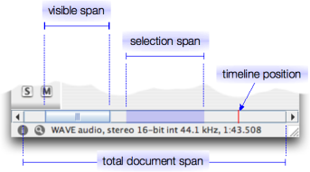

The timelime scrollbar is used to select the portion of the timeline which is visible in the document frame. The scrollbars indicate the visible portion and can be dragged with the mouse to navigate through the session. They disappear when the total session's duration is visible (completely zoomed out, keyboard Meta+Cursor Left or Alt+A).
A blue shaded rectangle indicates the current timeline selection with respect to the total document duration. The selected span is used for cut and delete as well as applying a filter from the process menu. A red vertical line indicates the current timeline position with respect to the total document duration. The timeline position represents the position at which audio gets pasted in and also corresponds to the starting point for playback. To alter the selection span and the timeline position, use the timeline axis or the pointer tool.
Typing Ctrl+Cursor Left will zoom out, Ctrl+Cursor Right will zoom in. For zoom-in, when the timeline position (vertical red bar) is visible, the zoom will try to retain the relative timeline position; when timeline position is before the visible span, the left margin will not be altered, when the timeline position is after the visible span, the right margin will not be altered. Alternatively you can use the zoom tool.